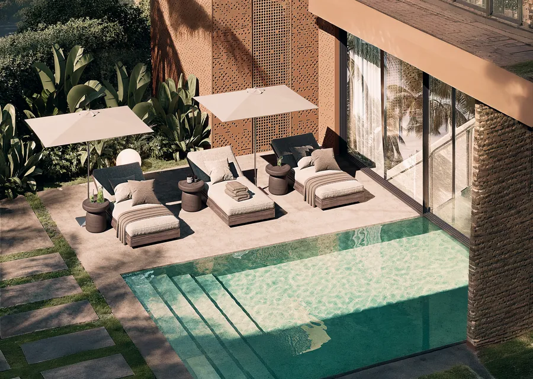
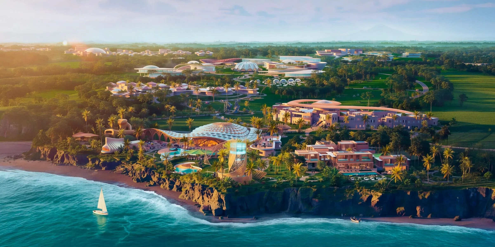

blacksandsoasis.com
Black Sands Oasis
Vila bergaya Desert Modernism: langit‑langit setinggi 6 meter, material alami, taman dan kolam renang pribadi
Pilih vila
Kota masa depan di tepi samudra
Klaster budaya di pantai barat Bali: sekolah, instalasi seni, spa, taman botani, dan restoran. Lingkungan yang siap untuk tinggal dan berinvestasi
Nuanu dari udara, pantai barat Bali
Tempat inovasi bertemu alam: tenang dan privat, dengan semua kebutuhan untuk bekerja, bersantai, dan berinvestasi dalam jarak berjalan kaki


Vila bergaya Desert Modernism: langit‑langit setinggi 6 meter, material alami, taman dan kolam renang pribadi
Pilih vila


Retret modern dengan coworking, sauna, bioskop, dan kafe di tengah alam yang memukau
Lihat retret


Penawaran langsung dari pemilik tanpa perantara. Ketentuan transparan dan fitur canggih
Cari hunianVersi baru platform kami untuk pemilik dan tamu segera hadir. Tinggalkan email Anda untuk menjadi yang pertama mendapatkan penawaran eksklusif